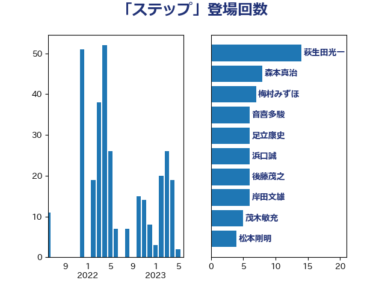

単語「ステップ」

| 萩生田光一 | 自由民主党 | 14 回 |
| 森本真治 | 立憲民主党 | 8 回 |
| 梅村みずほ | 日本維新の会 | 7 回 |
| 音喜多駿 | 日本維新の会 | 6 回 |
| 足立康史 | 日本維新の会 | 6 回 |
| 浜口誠 | 国民民主党 | 6 回 |
| 後藤茂之 | 自由民主党 | 6 回 |
| 岸田文雄 | 自由民主党 | 6 回 |
| 茂木敏充 | 自由民主党 | 5 回 |
| 松本剛明 | 自由民主党 | 4 回 |
| 日下正喜 | 公明党 | 4 回 |
| 岬麻紀 | 日本維新の会 | 4 回 |
| 大塚耕平 | 国民民主党 | 4 回 |
| 加藤勝信 | 自由民主党 | 4 回 |
| 西村明宏 | 自由民主党 | 3 回 |
| 福島みずほ | 社会民主党 | 3 回 |
| 柴田巧 | 日本維新の会 | 3 回 |
| 柳ヶ瀬裕文 | 日本維新の会 | 3 回 |
| 井出庸生 | 自由民主党 | 3 回 |
| 高木真理 | 立憲民主党 | 2 回 |
| 青柳仁士 | 日本維新の会 | 2 回 |
| 鈴木宗男 | 日本維新の会 | 2 回 |
| 鈴木俊一 | 自由民主党 | 2 回 |
| 金子道仁 | 日本維新の会 | 2 回 |
| 野田聖子 | 自由民主党 | 2 回 |
| 野村哲郎 | 自由民主党 | 2 回 |
| 緑川貴士 | 立憲民主党 | 2 回 |
| 空本誠喜 | 日本維新の会 | 2 回 |
| 穂坂泰 | 自由民主党 | 2 回 |
| 片山さつき | 自由民主党 | 2 回 |
| 沢田良 | 日本維新の会 | 2 回 |
| 池下卓 | 日本維新の会 | 2 回 |
| 水岡俊一 | 立憲民主党 | 2 回 |
| 森屋宏 | 自由民主党 | 2 回 |
| 平沼正二郎 | 自由民主党 | 2 回 |
| 山谷えり子 | 自由民主党 | 2 回 |
| 山本香苗 | 公明党 | 2 回 |
| 山口壯 | 自由民主党 | 2 回 |
| 小泉進次郎 | 自由民主党 | 2 回 |
| 守島正 | 日本維新の会 | 2 回 |
| 塩村あやか | 立憲民主党 | 2 回 |
| 堀場幸子 | 日本維新の会 | 2 回 |
| 勝部賢志 | 立憲民主党 | 2 回 |
| 伊東信久 | 日本維新の会 | 2 回 |
| 鰐淵洋子 | 公明党 | 1 回 |
| 高橋光男 | 公明党 | 1 回 |
| 高木かおり | 日本維新の会 | 1 回 |
| 高市早苗 | 自由民主党 | 1 回 |
| 馬場伸幸 | 日本維新の会 | 1 回 |
| 阿部知子 | 立憲民主党 | 1 回 |
| 阿部司 | 日本維新の会 | 1 回 |
| 長峯誠 | 自由民主党 | 1 回 |
| 長友慎治 | 国民民主党 | 1 回 |
| 鈴木義弘 | 国民民主党 | 1 回 |
| 鈴木敦 | 国民民主党 | 1 回 |
| 鈴木庸介 | 立憲民主党 | 1 回 |
| 進藤金日子 | 自由民主党 | 1 回 |
| 谷公一 | 自由民主党 | 1 回 |
| 西村康稔 | 自由民主党 | 1 回 |
| 葉梨康弘 | 自由民主党 | 1 回 |
| 篠原豪 | 立憲民主党 | 1 回 |
| 福山哲郎 | 立憲民主党 | 1 回 |
| 石川昭政 | 自由民主党 | 1 回 |
| 石井啓一 | 公明党 | 1 回 |
| 田村憲久 | 自由民主党 | 1 回 |
| 田村まみ | 国民民主党 | 1 回 |
| 田名部匡代 | 立憲民主党 | 1 回 |
| 玄葉光一郎 | 立憲民主党 | 1 回 |
| 牧山ひろえ | 立憲民主党 | 1 回 |
| 浅田均 | 日本維新の会 | 1 回 |
| 津島淳 | 自由民主党 | 1 回 |
| 河野太郎 | 自由民主党 | 1 回 |
| 河西宏一 | 公明党 | 1 回 |
| 櫛渕万里 | れいわ新選組 | 1 回 |
| 榛葉賀津也 | 国民民主党 | 1 回 |
| 梅村聡 | 日本維新の会 | 1 回 |
| 柴山昌彦 | 自由民主党 | 1 回 |
| 松本尚 | 自由民主党 | 1 回 |
| 松川るい | 自由民主党 | 1 回 |
| 杉本和巳 | 日本維新の会 | 1 回 |
| 木村英子 | れいわ新選組 | 1 回 |
| 斉藤鉄夫 | 公明党 | 1 回 |
| 掘井健智 | 日本維新の会 | 1 回 |
| 庄子賢一 | 公明党 | 1 回 |
| 島尻安伊子 | 自由民主党 | 1 回 |
| 岸真紀子 | 立憲民主党 | 1 回 |
| 岩田和親 | 自由民主党 | 1 回 |
| 岩渕友 | 日本共産党 | 1 回 |
| 山添拓 | 日本共産党 | 1 回 |
| 山本太郎 | れいわ新選組 | 1 回 |
| 山本剛正 | 日本維新の会 | 1 回 |
| 山岡達丸 | 立憲民主党 | 1 回 |
| 小倉將信 | 自由民主党 | 1 回 |
| 宮本徹 | 日本共産党 | 1 回 |
| 宮本岳志 | 日本共産党 | 1 回 |
| 堀井巌 | 自由民主党 | 1 回 |
| 土田慎 | 自由民主党 | 1 回 |
| 國重徹 | 公明党 | 1 回 |
| 吉良州司 | 無所属 | 1 回 |
| 古川直季 | 自由民主党 | 1 回 |
| 勝目康 | 自由民主党 | 1 回 |
| 務台俊介 | 自由民主党 | 1 回 |
| 加田裕之 | 自由民主党 | 1 回 |
| 前原誠司 | 国民民主党 | 1 回 |
| 佐々木さやか | 公明党 | 1 回 |
| 住吉寛紀 | 日本維新の会 | 1 回 |
| 伊藤孝恵 | 国民民主党 | 1 回 |
| 伊藤俊輔 | 立憲民主党 | 1 回 |
| 中川貴元 | 自由民主党 | 1 回 |
| 三浦信祐 | 公明党 | 1 回 |